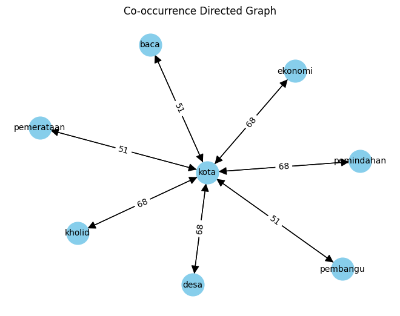

TUGAS PAGE RANK#
Import dan Dataset#
import pandas as pd
import numpy as np
df = pd.read_csv('https://raw.githubusercontent.com/OvadillaAisyahRahma/ppw/main/kompasberita.csv')
df
| Judul | Isi | Label | |
|---|---|---|---|
| 0 | PKS Sebut Kritik Anies soal Proyek IKN Sejalan... | KOMPAS.com - Juru Bicara (Jubir) Partai Keadil... | Politik |
| 1 | PKS Sebut Jakarta Masih Layak Jadi Ibu Kota, P... | KOMPAS.com - Pengamat tata kota Universitas Tr... | Politik |
| 2 | Partai Gelora Identifikasi 3 Model Kecurangan ... | NaN | Politik |
| 3 | PKS Sebut Jakarta Masih Layak Jadi Ibu Kota, P... | KOMPAS.com - Pengamat tata kota Universitas Tr... | Politik |
| 4 | PKS Sebut Kritik Anies soal Proyek IKN Sejalan... | KOMPAS.com - Juru Bicara (Jubir) Partai Keadil... | Politik |
| ... | ... | ... | ... |
| 586 | Mesin Politik di Sumatera Sudah Panas, Anis Ma... | KOMPAS.com - Ketua Umum Partai Gelombang Rakya... | Politik |
| 587 | Soal Kasus Aiman, TPN Ganjar-Mahfud: Kebebasan... | JAKARTA, KOMPAS.com - Wakil Direktur Hukum dan... | Nasional |
| 588 | Mesin Politik di Sumatera Sudah Panas, Anis Ma... | KOMPAS.com - Ketua Umum Partai Gelombang Rakya... | Politik |
| 589 | Jokowi Sebut Indonesia Bangsa Harmonis, Perbed... | JAKARTA, KOMPAS.com - Presiden Joko Widodo men... | Nasional |
| 590 | BNN: Pengguna Narkotika di Indonesia Turun, Le... | JAKARTA, KOMPAS.com - Kepala Badan Narkotika N... | Nasional |
591 rows × 3 columns
Cleaning#
import re, string
# Text Cleaning
def cleaning(text):
# Menghapus tag HTML
text = re.compile('<.*?>|&([a-z0-9]+|#[0-9]{1,6}|#x[0-9a-f]{1,6});').sub('', str(text))
# Mengubah seluruh teks menjadi huruf kecil
text = text.lower()
# Menghapus spasi pada teks
text = text.strip()
# Menghapus Tanda Baca, karakter spesial, and spasi ganda
text = re.compile('<.*?>').sub('', text)
text = re.compile('[%s]' % re.escape(string.punctuation)).sub(' ', text)
text = re.sub('\s+', ' ', text)
text = re.sub("â½ïgoal", "", text)
text = re.sub("SCROLL TO CONTINUE WITH CONTENT", "", text)
text = re.sub(r'[^a-zA-Z\s]', '', text)
# Menghapus Nomor
text = re.sub(r'\[[0-9]*\]', ' ', text)
text = re.sub(r'[^\w\s]', '', str(text).lower().strip())
text = re.sub(r'\d', ' ', text)
text = re.sub(r'\s+', ' ', text)
# Mengubah text yang berisi 'nan' dengan whitespace agar nantinya dapat dihapus
text = re.sub('nan', '', text)
return text
df['Isi'] = df['Isi'].apply(lambda x: cleaning(x))
Tokenisasi#
import nltk
from nltk.tokenize import word_tokenize
nltk.download('popular')
from nltk.corpus import stopwords
from itertools import chain
nltk.download('stopwords')
[nltk_data] Downloading collection 'popular'
[nltk_data] |
[nltk_data] | Downloading package cmudict to /root/nltk_data...
[nltk_data] | Unzipping corpora/cmudict.zip.
[nltk_data] | Downloading package gazetteers to /root/nltk_data...
[nltk_data] | Unzipping corpora/gazetteers.zip.
[nltk_data] | Downloading package genesis to /root/nltk_data...
[nltk_data] | Unzipping corpora/genesis.zip.
[nltk_data] | Downloading package gutenberg to /root/nltk_data...
[nltk_data] | Unzipping corpora/gutenberg.zip.
[nltk_data] | Downloading package inaugural to /root/nltk_data...
[nltk_data] | Unzipping corpora/inaugural.zip.
[nltk_data] | Downloading package movie_reviews to
[nltk_data] | /root/nltk_data...
[nltk_data] | Unzipping corpora/movie_reviews.zip.
[nltk_data] | Downloading package names to /root/nltk_data...
[nltk_data] | Unzipping corpora/names.zip.
[nltk_data] | Downloading package shakespeare to /root/nltk_data...
[nltk_data] | Unzipping corpora/shakespeare.zip.
[nltk_data] | Downloading package stopwords to /root/nltk_data...
[nltk_data] | Package stopwords is already up-to-date!
[nltk_data] | Downloading package treebank to /root/nltk_data...
[nltk_data] | Unzipping corpora/treebank.zip.
[nltk_data] | Downloading package twitter_samples to
[nltk_data] | /root/nltk_data...
[nltk_data] | Unzipping corpora/twitter_samples.zip.
[nltk_data] | Downloading package omw to /root/nltk_data...
[nltk_data] | Downloading package omw-1.4 to /root/nltk_data...
[nltk_data] | Downloading package wordnet to /root/nltk_data...
[nltk_data] | Downloading package wordnet2021 to /root/nltk_data...
[nltk_data] | Downloading package wordnet31 to /root/nltk_data...
[nltk_data] | Downloading package wordnet_ic to /root/nltk_data...
[nltk_data] | Unzipping corpora/wordnet_ic.zip.
[nltk_data] | Downloading package words to /root/nltk_data...
[nltk_data] | Unzipping corpora/words.zip.
[nltk_data] | Downloading package maxent_ne_chunker to
[nltk_data] | /root/nltk_data...
[nltk_data] | Unzipping chunkers/maxent_ne_chunker.zip.
[nltk_data] | Downloading package punkt to /root/nltk_data...
[nltk_data] | Package punkt is already up-to-date!
[nltk_data] | Downloading package snowball_data to
[nltk_data] | /root/nltk_data...
[nltk_data] | Downloading package averaged_perceptron_tagger to
[nltk_data] | /root/nltk_data...
[nltk_data] | Unzipping taggers/averaged_perceptron_tagger.zip.
[nltk_data] |
[nltk_data] Done downloading collection popular
[nltk_data] Downloading package stopwords to /root/nltk_data...
[nltk_data] Package stopwords is already up-to-date!
True
df['isi_tokens'] = df['Isi'].apply(lambda x: word_tokenize(x))
df[["Isi", "isi_tokens"]].head()
| Isi | isi_tokens | |
|---|---|---|
| 0 | kompas com juru bicara jubir partai keadilan s... | [kompas, com, juru, bicara, jubir, partai, kea... |
| 1 | kompas com pengamat tata kota universitas tris... | [kompas, com, pengamat, tata, kota, universita... |
| 2 | [] | |
| 3 | kompas com pengamat tata kota universitas tris... | [kompas, com, pengamat, tata, kota, universita... |
| 4 | kompas com juru bicara jubir partai keadilan s... | [kompas, com, juru, bicara, jubir, partai, kea... |
Stopword#
stop_words = set(chain(stopwords.words('indonesian')))
df['isi_tokens'] = df['isi_tokens'].apply(lambda x: [w for w in x if not w in stop_words])
df['Isi'] = df['isi_tokens'].apply(lambda tokens: ' '.join(tokens))
df.head()
| Judul | Isi | Label | isi_tokens | |
|---|---|---|---|---|
| 0 | PKS Sebut Kritik Anies soal Proyek IKN Sejalan... | kompas com juru bicara jubir partai keadilan s... | Politik | [kompas, com, juru, bicara, jubir, partai, kea... |
| 1 | PKS Sebut Jakarta Masih Layak Jadi Ibu Kota, P... | kompas com pengamat tata kota universitas tris... | Politik | [kompas, com, pengamat, tata, kota, universita... |
| 2 | Partai Gelora Identifikasi 3 Model Kecurangan ... | Politik | [] | |
| 3 | PKS Sebut Jakarta Masih Layak Jadi Ibu Kota, P... | kompas com pengamat tata kota universitas tris... | Politik | [kompas, com, pengamat, tata, kota, universita... |
| 4 | PKS Sebut Kritik Anies soal Proyek IKN Sejalan... | kompas com juru bicara jubir partai keadilan s... | Politik | [kompas, com, juru, bicara, jubir, partai, kea... |
Co-Occurency Matriks#
df['Isi'][0]
'kompas com juru bicara jubir partai keadilan sejahtera pks muhammad kholid memandang kritik calon presiden capres nomor urut anies baswedan kota negara ikn nusantara sejalan pandangan partainya alasan memindahkan kota pemerataan pemerataan ekonomi memindahkan kota membangun pusat pertumbuhan ekonomi sesuai keunggulan daya saing wilayah siaran pers diterima kompas com kamis pemerataan pembangu membesarkan kota kota terbangun baca presiden terbitkan aturan cuti menteri wali kota kampanyetak membesarkan menaikkan kelas kota kota kota menengah kota menengah kota kota kota maju motor pertumbuhan ekonomi imbuh calon legislatif caleg dewan perwakilan rakyat dpr republik indonesia ri daerah pemilihan dapil depok bekasi kholid dana desa dd stimulus pembangu desa pembangu desa menyejahterakan warga baca mobilisasi aparat desa zaman orba pengamat ui era otoriteralumnus universitas indonesia ui memandang pemindahan kota dirancang matang tergesa gesa pemindahan kota kholid mengkaji dampaknya komprehensif dampak ekonomi politik sosial historis geopolitik aspek lingkungan hidup ditimbulkan proses pembahasan ikn kemarin cepat terburu buru pelibatan pemangku kepentingan membahasnya imbuhnya baca mahfud md buka peluang revisi aturan hgu iknoleh kholid pks menilai proses pemindahan kota terburu buru cermat review dikoreksi kebijakan pemindahan kota'
from sklearn.feature_extraction.text import CountVectorizer
vectorizer = CountVectorizer(tokenizer=lambda x: x.split())
X = vectorizer.fit_transform([df['Isi'][0]])
co_occurrence_matrix = (X.T * X)
co_occurrence_matrix.setdiag(0)
co_occurrence_df = pd.DataFrame(co_occurrence_matrix.toarray(), columns=vectorizer.get_feature_names_out(),index=vectorizer.get_feature_names_out())
co_occurrence_df
/usr/local/lib/python3.10/dist-packages/sklearn/feature_extraction/text.py:528: UserWarning: The parameter 'token_pattern' will not be used since 'tokenizer' is not None'
warnings.warn(
| alasan | anies | aparat | aspek | aturan | baca | baswedan | bekasi | bicara | buka | ... | terbitkan | terburu | tergesa | ui | universitas | urut | wali | warga | wilayah | zaman | |
|---|---|---|---|---|---|---|---|---|---|---|---|---|---|---|---|---|---|---|---|---|---|
| alasan | 0 | 1 | 1 | 1 | 2 | 3 | 1 | 1 | 1 | 1 | ... | 1 | 2 | 1 | 2 | 1 | 1 | 1 | 1 | 1 | 1 |
| anies | 1 | 0 | 1 | 1 | 2 | 3 | 1 | 1 | 1 | 1 | ... | 1 | 2 | 1 | 2 | 1 | 1 | 1 | 1 | 1 | 1 |
| aparat | 1 | 1 | 0 | 1 | 2 | 3 | 1 | 1 | 1 | 1 | ... | 1 | 2 | 1 | 2 | 1 | 1 | 1 | 1 | 1 | 1 |
| aspek | 1 | 1 | 1 | 0 | 2 | 3 | 1 | 1 | 1 | 1 | ... | 1 | 2 | 1 | 2 | 1 | 1 | 1 | 1 | 1 | 1 |
| aturan | 2 | 2 | 2 | 2 | 0 | 6 | 2 | 2 | 2 | 2 | ... | 2 | 4 | 2 | 4 | 2 | 2 | 2 | 2 | 2 | 2 |
| ... | ... | ... | ... | ... | ... | ... | ... | ... | ... | ... | ... | ... | ... | ... | ... | ... | ... | ... | ... | ... | ... |
| urut | 1 | 1 | 1 | 1 | 2 | 3 | 1 | 1 | 1 | 1 | ... | 1 | 2 | 1 | 2 | 1 | 0 | 1 | 1 | 1 | 1 |
| wali | 1 | 1 | 1 | 1 | 2 | 3 | 1 | 1 | 1 | 1 | ... | 1 | 2 | 1 | 2 | 1 | 1 | 0 | 1 | 1 | 1 |
| warga | 1 | 1 | 1 | 1 | 2 | 3 | 1 | 1 | 1 | 1 | ... | 1 | 2 | 1 | 2 | 1 | 1 | 1 | 0 | 1 | 1 |
| wilayah | 1 | 1 | 1 | 1 | 2 | 3 | 1 | 1 | 1 | 1 | ... | 1 | 2 | 1 | 2 | 1 | 1 | 1 | 1 | 0 | 1 |
| zaman | 1 | 1 | 1 | 1 | 2 | 3 | 1 | 1 | 1 | 1 | ... | 1 | 2 | 1 | 2 | 1 | 1 | 1 | 1 | 1 | 0 |
128 rows × 128 columns
import matplotlib.pyplot as plt
import networkx as nx
from itertools import combinations
G = nx.DiGraph()
for idx, row in co_occurrence_df.iterrows():
for col in co_occurrence_df.columns:
weight = co_occurrence_df.loc[idx, col]
if weight > 50 and idx != col:
G.add_edge(idx, col, weight=weight)
# Menampilkan graf
pos = nx.spring_layout(G)
labels = nx.get_edge_attributes(G, 'weight')
nx.draw(G, pos, with_labels=True, node_size=700, node_color='skyblue', font_size=10, font_color='black', arrowsize=20)
nx.draw_networkx_edge_labels(G, pos, edge_labels=labels)
plt.title("Co-occurrence Directed Graph")
plt.show()

Closeness Centrality#
closeness_centrality = nx.closeness_centrality(G)
print("Closeness Centrality:")
for node, closeness in sorted(closeness_centrality.items(), key=lambda x: x[1], reverse=True):
print(f"{node}: {closeness}")
Closeness Centrality:
kota: 1.0
baca: 0.5384615384615384
desa: 0.5384615384615384
ekonomi: 0.5384615384615384
kholid: 0.5384615384615384
pembangu: 0.5384615384615384
pemerataan: 0.5384615384615384
pemindahan: 0.5384615384615384
Code Page Rank#
pagerank = nx.pagerank(G)
print("\nPageRank:")
for node, rank in sorted(pagerank.items(), key=lambda x: x[1], reverse=True):
print(f"{node}: {rank}")
PageRank:
kota: 0.46959634737653244
desa: 0.08261458441975475
ekonomi: 0.08261458441975475
kholid: 0.08261458441975475
pemindahan: 0.08261458441975475
baca: 0.06664843831481607
pembangu: 0.06664843831481607
pemerataan: 0.06664843831481607
df['Isi'][0]
'kompas com juru bicara jubir partai keadilan sejahtera pks muhammad kholid memandang kritik calon presiden capres nomor urut anies baswedan kota negara ikn nusantara sejalan pandangan partainya alasan memindahkan kota pemerataan pemerataan ekonomi memindahkan kota membangun pusat pertumbuhan ekonomi sesuai keunggulan daya saing wilayah siaran pers diterima kompas com kamis pemerataan pembangu membesarkan kota kota terbangun baca presiden terbitkan aturan cuti menteri wali kota kampanyetak membesarkan menaikkan kelas kota kota kota menengah kota menengah kota kota kota maju motor pertumbuhan ekonomi imbuh calon legislatif caleg dewan perwakilan rakyat dpr republik indonesia ri daerah pemilihan dapil depok bekasi kholid dana desa dd stimulus pembangu desa pembangu desa menyejahterakan warga baca mobilisasi aparat desa zaman orba pengamat ui era otoriteralumnus universitas indonesia ui memandang pemindahan kota dirancang matang tergesa gesa pemindahan kota kholid mengkaji dampaknya komprehensif dampak ekonomi politik sosial historis geopolitik aspek lingkungan hidup ditimbulkan proses pembahasan ikn kemarin cepat terburu buru pelibatan pemangku kepentingan membahasnya imbuhnya baca mahfud md buka peluang revisi aturan hgu iknoleh kholid pks menilai proses pemindahan kota terburu buru cermat review dikoreksi kebijakan pemindahan kota'
Ranking Kata Penting#
Rangking kata penting ini diperoleh dari centrality
ranking_closeness = sorted(closeness_centrality.items(), key=lambda x: x[1], reverse=True)[:10]
print("Kata Kunci dari berita diatas menggunakan closeness berdasarkan urutan (Rank):")
for i, (node, closeness) in enumerate(ranking_closeness, 1):
print(f"Rank {i}: {node} nilai closeness {closeness}")
Kata Kunci dari berita diatas menggunakan closeness berdasarkan urutan (Rank):
Rank 1: kota nilai closeness 1.0
Rank 2: baca nilai closeness 0.5384615384615384
Rank 3: desa nilai closeness 0.5384615384615384
Rank 4: ekonomi nilai closeness 0.5384615384615384
Rank 5: kholid nilai closeness 0.5384615384615384
Rank 6: pembangu nilai closeness 0.5384615384615384
Rank 7: pemerataan nilai closeness 0.5384615384615384
Rank 8: pemindahan nilai closeness 0.5384615384615384
ranking_pagerank = sorted(pagerank.items(), key=lambda x: x[1], reverse=True)[:10]
print("Kata Kunci dari berita diatas menggunakan pagerank berdasarkan urutan (Rank):")
for i, (node, pagerank) in enumerate(ranking_pagerank, 1):
print(f"Rank {i}: {node} nilai Pagerank {pagerank}")
Kata Kunci dari berita diatas menggunakan pagerank berdasarkan urutan (Rank):
Rank 1: kota nilai Pagerank 0.46959634737653244
Rank 2: desa nilai Pagerank 0.08261458441975475
Rank 3: ekonomi nilai Pagerank 0.08261458441975475
Rank 4: kholid nilai Pagerank 0.08261458441975475
Rank 5: pemindahan nilai Pagerank 0.08261458441975475
Rank 6: baca nilai Pagerank 0.06664843831481607
Rank 7: pembangu nilai Pagerank 0.06664843831481607
Rank 8: pemerataan nilai Pagerank 0.06664843831481607